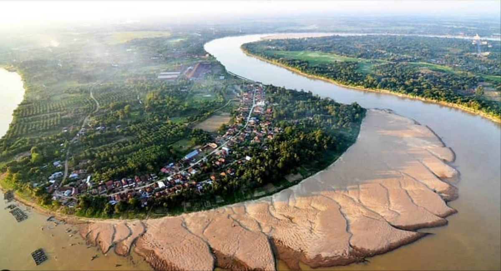

Sungai Batanghari
Sungai Batanghari adalah sungai terpanjang di Pulau Sumatra, dengan panjang sekitar 800 km, yang berhulu di Gunung Rasan, Sumatera Barat, dan bermuara di Selat Berhala, Jambi. Aliran sungai ini melewati Danau Diatas dan Danau Dibawah di kawasan Taman Nasional Kerinci Seblat, kemudian mengalir melintasi sejumlah kabupaten di Sumatera Barat dan Jambi, seperti Dharmasraya, Bungo, Tebo, Kota Jambi, hingga Tanjung Jabung Timur. Dengan lebar berkisar 300 hingga 500 meter dan kedalaman 6 hingga 7 meter, Batanghari menjadi salah satu Daerah Aliran Sungai (DAS) terbesar di Indonesia, mencakup area seluas sekitar 80.000 km². Selain menjadi jalur transportasi utama dan sumber perikanan, sungai ini juga memiliki peran sejarah dan budaya yang penting, terutama sebagai pusat peradaban kuno seperti Kerajaan Melayu Dharmasraya dan sebagai jalur perdagangan emas dan rempah menuju pelabuhan sejak masa Han dan Tang.